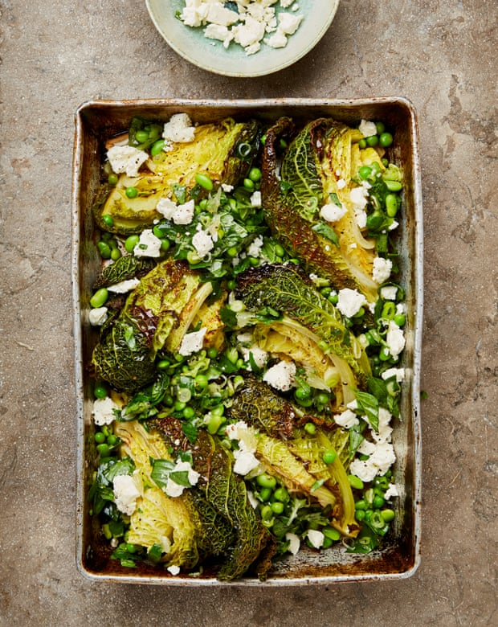

Roast cabbage with lemony peas and feta

This is a great side for any roast, but it’s also delicious by itself. Use fresh peas, if and when you can get them; for a vegan alternative, replace the feta with olives or capers – their briny flavour works very well here.
Heat the oven to 220C (200C fan)/425F/gas 7. Snugly arrange the cabbage wedges cut side down in a 20cm x 30cm baking dish and nestle the halved garlic cloves in between. Pour over the stock and three tablespoons of oil, sprinkle over three-quarters of a teaspoon of salt and a good grind of pepper, then roast for 15 minutes, until nicely browned in places. Gently turn the wedges on to the other cut side and cook for another 15 minutes, until browned on the other side: you want them nicely softened with charred bits on top. Remove and set aside.
Meanwhile, make the pea salsa. Top and tail the lemon and use a small, sharp knife to remove the skin and pith. Cut between the membranes to release the individual segments, then cut each segment into four. Put these in a medium bowl, then squeeze over any juices from the membranes and discard.
Just before serving, so the peas don’t lose their colour, stir in the remaining two tablespoons of oil, the peas, edamame, basil, spring onions, a quarter-teaspoon of salt and a good grind of pepper. Spoon the pea salsa on to the cabbage wedges, top with half the crumbled feta and serve with the rest of the feta in a bowl alongside.